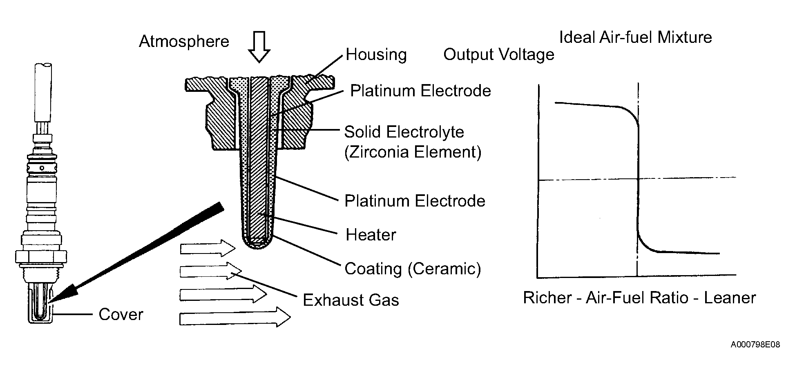

DTC P0130 Oxygen Sensor Circuit Malfunction (Bank 1 Sensor 1); DTC P2195 Oxygen Sensor Signal Stuck Lean (Bank 1 Sensor 1); DTC P2196 Oxygen Sensor Signal Stuck Rich (Bank 1 Sensor 1): Description
The Heated Oxygen (HO2) sensor (bank 1 sensor 1) monitors the oxygen concentration in the exhaust gas. For optimum TWC operation, the air-fuel mixture must be maintained as close as possible to the stoichiometric ratio. The HO2 sensor output voltage changes dramatically in the vicinity of the stoichiometric ratio. By making adjustments in accordance with these signal voltages, the ECM adjusts the fuel injection time so that the air-fuel ratio remains close to stoichiometric levels.
If the oxygen concentration in the exhaust gas increases, the air-fuel ratio is lean and the HO2 sensor output voltage to the ECM drops below 0.45 V. If the oxygen concentration in the exhaust gas decreases, the air-fuel ratio is rich and the HO2 sensor output voltage to the ECM increases to above 0.45 V.

Courtesy of © TOYOTA, LICENSE AGREEMENT TMS1002| DTC No. | DTC Detection Condition | Trouble Area |
|---|---|---|
| P0130 | Output voltage of Heated Oxygen (HO2) sensor remains at 0.4 V or more, or 0.55 V or less, during idling after engine is warmed up (2 trip detection logic) |
|
| P2195 | Output voltage of HO2 sensor remains at 0.55 V or less during idling with warm engine (2 trip detection logic) |
|
| P2196 | Output voltage of HO2 sensor remains at 0.4 V or more during idling with warm engine (2 trip detection logic) |
|
HINT:
- Sensor 1 refers to the sensor mounted in front of the Three-Way Catalytic Converter (TWC), and located near the engine assembly.
- The output voltage of the HO2 sensor and the short-term fuel trim value can be read using the intelligent tester.